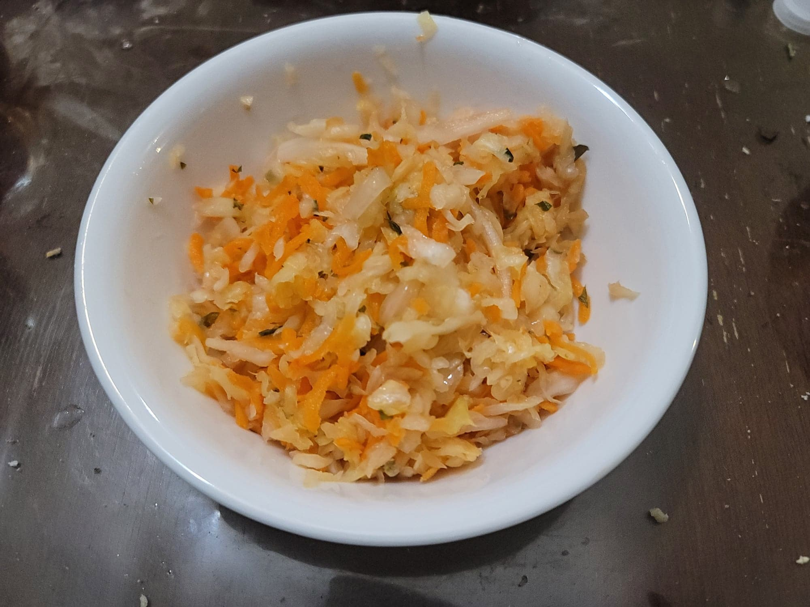

Curtido

Ingredients:
- 1 head Cabbage (600~ g), shredded
- 1-2 Carrots (150~ g), grated
- 1 Onion (180~ g), thinly sliced
- 2 cloves Garlic, minced
- 1-2 Jalapeño or Serrano peppers, sliced
- 1 tbsp Fresh oregano, chopped
- Sea salt, 2% of weight
- Optional: Lime juice, for serving
Instructions:
- Combine the prepared cabbage, carrots, onion, garlic, peppers, and oregano into a bowl and take note of their combined weight in grams. Then weigh out 2% of that weight in salt. Knead the salt into the vegetables until they release enough liquid to cover. Transfer to a 2 quart sanitized jar and push down to ensure that everything is under the brine. Weigh down the vegetables with a fermentation weight. Loosely seal and let ferment in a cool, dark location for 2-8 days or to preference. Then serve immediately with lime juice or transfer to a fridge to store.